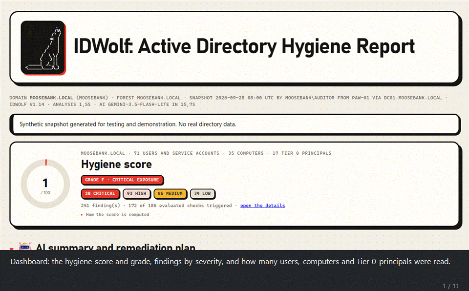

.
/ V\
/ ` /
<< |
/ |
/ |
/ |
/ \ \ /
( ) | |
________| _/_ | |
<__________\______)\__)
A hygiene audit for Active Directory and Microsoft Entra ID. One read-only collection with the native modules, the analysis runs anywhere else, offline, and the report says what is wrong, what it could be chained into and what could not be judged at all.
The report below is the real output of IDWolf on a synthetic domain, shipped in the repository as
examples\demo_report.html. It is one HTML file with no server and no CDN behind it:
open it, read the score, follow an attack path, filter the findings, mail it as it is.

Collect-ADSnapshot.ps1 uses the RSAT ActiveDirectory module and
nothing else; Collect-EntraSnapshot.ps1 uses the Microsoft Graph SDK with Global
Reader and GET requests only. No offensive tooling, nothing written to the directory, and
secrets are masked before the snapshot is saved. A section that fails is recorded as a
collection error, never as a clean result.
The snapshot is judged on your own machine, with no AD or Graph module in sight: 186 AD checks across 9 categories - Kerberos, privileged access, account hygiene, domain configuration, permissions, AD CS (ESC1-15), DNS, host hardening read from the GPOs, operational health - plus 92 Entra checks. Password quality comes from a separate hashless export, so no password hash is ever handled.
One self-contained HTML file: a score and a grade, the attack-path and trust maps drawn as
server-side SVG, the Tier 0 members, framework cards, every finding with its fix. Plus a CSV
and JSON Lines for a SIEM, an exceptions file for what you accept on purpose, and a
-CompareTo diff against the previous run.
Tier 0 is resolved once - nested groups, cycles, foreign principals, primary groups - and matched by SID, never by group name, so a localized directory still works. Every finding is then placed against that map, and the report draws how a weakness reaches domain dominance.
The same discipline applies to the 43 attacks of recent years that the report names next to the checks looking for the condition they need - Kerberoasting and AS-REP roasting, noPac, the AD CS escalations, RBCD, shadow credentials, golden gMSA, SID history - and to the optional AI summary, whose chain claims are re-checked locally against the findings before you read them.
A snapshot is a directory's configuration, not a stream of events. A collection gap must never look like an all-clear, so every check the snapshot could not answer is listed as not evaluated, with the reason: a permission missing, a section that failed, a switch not passed, a deep collection not run.
No framework panel is a statement of conformity, the score is a hygiene score and not a risk number, and the findings you accept on purpose go into an exceptions file with an expiry date instead of disappearing.
The collectors use native read-only cmdlets. Test-IDWolfSafety.ps1 parses the
shipped scripts and fails on any write verb, on any external command that is not on its
allow-list, on downloads, iex and Base64, and on any URL outside Graph, Gemini and
MITRE. The regression suite runs it on the real code and on a deliberately tampered copy.
Every age is computed against the collection time stored in the snapshot, never against today, and the findings come out in a stable order. The suite analyses a snapshot in two separate processes and compares the CSV, the JSON Lines and the AI prompt byte for byte, on PowerShell 7 and on Windows PowerShell 5.1.
The deterministic report is on disk before anything is sent. Then every user, host, group and domain name is replaced by a token, and the outbound prompt is re-scanned for the original identifiers: if one survived, the request is aborted. The answer is de-tokenized locally, and anything it cites that did not fire is dropped.
The checks, the attack list and the framework mappings live in the shipped catalogs, and the
documents are generated from them. The launcher's only network call is one version check
against the GitHub tag list - a notice, never a download - and -NoUpdateCheck
turns it off.
No installer, no module manifest, no build step: the scripts dot-source what they need. A scheduled-task wrapper collects, analyses, diffs against the previous run and appends JSON Lines to one file for your SIEM with no prompts - and it never registers the task itself.
IDWolf is written and maintained by Gabriele Piccini. It is tested on a real throw-away Active Directory lab, not only on synthetic data: a domain populated with Vulnerable-AD and with the project's own scripts, which plant ACL chains, delegation and the rest, so the checks are judged against misconfigurations that behave like the ones in production.